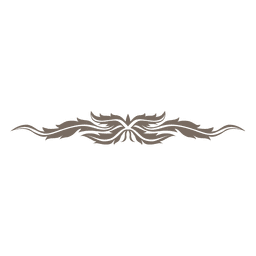

„Po Eldorově smrti jsme si všichni mysleli, že naše utrpení ustane, že
nás Skugga nechá být. Jak šeredně jsme se spletli. Nikdo neví proč nás
trestá, dostala co chtěla. Snad ji popudilo že jsme chtěli okrást
Eldorovu mrtvolu, možná přivolala hladomor kvůli prohrané bitvě, která
proběhla na pahorku za usedlostí Sollerön. Kdo ví. Jisté však je, že na
vesnici usedla chudoba a bída. Rada tří, skládající se z vůdců rodů, se
shodla, že musí jednat. Po dlouhém pátrání nalezli místo, odkud se
nejspíše všechno řídilo, bránu do podsvětí. Skupina vesničanů se vydala
na dlouhou cestu, ještě více na sever než se nacházela vesnice, do hor.
Nevědí co tam budou dělat. Odešli na smrt. Snad se ještě někdy vrátí...“

Příběh z této akce se právě píše
Popis akce
Prach pod světem byl outdoorový nordický LARP kategorie svět s
měkčenými zbraněmi. Byl zasazen do středověké skandinávie s prvky
fantasy. Který se odehrál v lesích a na pláních Krušných hor.
MAEVE - Vůdkyně cele skupiny. Její obouruční meč jen zřídka
mine cíl GULNAR - Štítonoš, v mládí jeho bratra zahynul v boji, pod
ledovou štěpinou vyslanou čarodějem. Přísahal že svého bratr
pomstí, že zabije všechny čaroděje, které potká. HELIANTH - Vždy veselá a duchaplná. Pro výpravu by položila
život, což se možná dokonce stane. ILY - Její znalost v bylinkářství je pro výpravu kíčová.
ROHOVAN - Rohovan je zkušený řemeslník a veselý mladík s
často až přespříliš jiskrným smyslem pro humra. SIGMMUND - Disciplinovaný, pracovitý a zručný ve svém
řemeslu
Zkrácený příběh akce
Skupina 6 odvážlivců, sebevražedná družina, vyrazila do kraje, kde se
prý nachází brána do podsvětí. Krajina to byla drsná, širé pláně
vzbuzující silný pocit beznaděje, pochybní tvorové na každém kroku,
prolhané městečko, ale hlavně spousta duchů a nemrtvých, Nejsilnější
armáda Skuggy. Družina postavila pevnost, malou, ale přesto jim skýtala
alespoň nějaký úkryt. Z ní vyráželi na výpravy za nebeskými runami,
jediným prostředkem jak uzavřít bránu. Jejich zbraně zrudly krví, jak
zabíjeli jejich nositele, sice s nevolí, ale z nutnosti. Každý z družiny
měl svůj důvod k výpravě, každý ho chtěl naplnit. A tak se stal že
válečník Gulnar zavraždil čaroděje, kterého potkali, Rohovanova otce.
Bojovníkův důvod byl ušlechtilý s pohledem na jeho minulost, ale mág z
posledních sil žádal Rohovana o pomstu. Ten jeho prosbu neodkladně
vyslyšel. Zem se smáčela Gulnarovou krví, zatímco jeho vrah ukládal tělo
svého otce.
Družina získala poslední Runu, stalo se to rychle z nenadání, tělo
odtáhli ale nezakopali, nebylo času na zbyt. Vydali se na cestu k místu
zvaném Dragesteiner, k bráně do podsvětí. Tam potkali Skuggu zahalenou v
mlžném oparu a černém hávu. Tu vyvolala své bojovníky, a strhla se řež.
Dlouhá byla bitva, půda se brzy proměnila v rudé bahno. Náhle poslední
runa byla umístěna, brána se uzavřela a Skugga se s myslí drásajícím
řevem vypařila. Družina slavně zvítězila a slavila do noci, ale nazítří
ráno jim krev ztuhla v žilách. Před pevností se zformoval poslední
zoufalý útok. Výpady nemrtvých obránci odráželi statečně, ztráty však
byly velké. Ačkoli svůj život žádný obránce neztratil. Helianth byla
smrtelně zraněna a spoustu dalších též. nikdo neví jestli přežijí, ale
svůj cíl splnili.
A jak ve svém díle řekl básník Korven Světaznalý: "Lepší zemřít
hrdinskou smrtí, než poddat se nepříteli!"
Ikony použity na tomto webu jsou od těchto tvůrců: Prettycons, Mayor
icons a smalllikeart a dalsi. Děkuji moc!